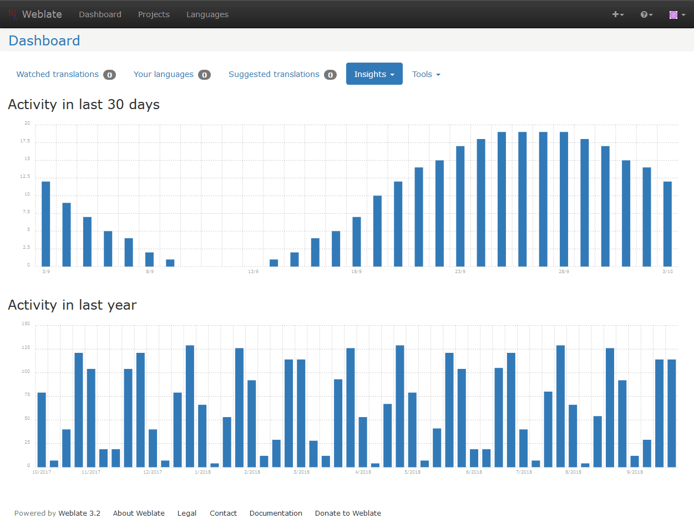
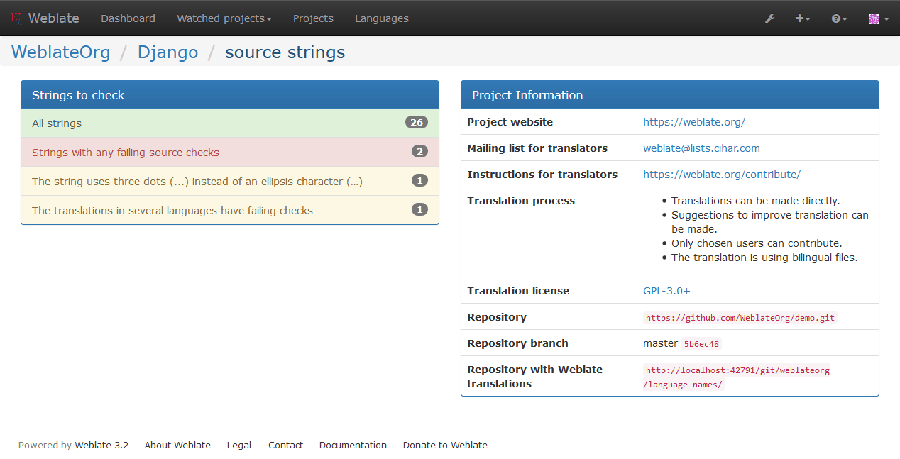
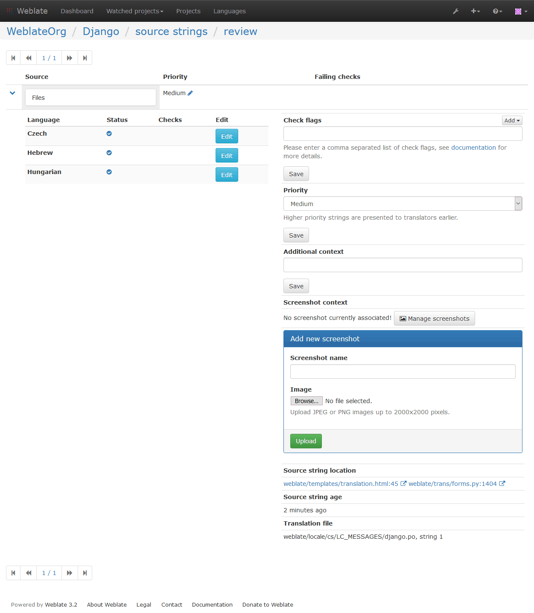

Reviewing source strings¶
Activity reports¶
You can check activity reports for translations, project or individual users.
Source strings checks¶
Weblate includes quite a lot of Quality checks. Some of them also focus on quality of source strings. These can give you some hints for making strings easier to translate. You can check failing source checks on Source tab of every component.
Failing checks on translation¶
On the other side, failing translation checks might also indicate problem in the source strings. Translators often tend to fix some mistakes in the translation instead of reporting it - a typical example is a missing full stop at the end of sentence, but there are more similar cases.
Reviewing all failing checks on your translation can bring you valuable feedback for improving source strings as well.
You can find the Source strings review in the Tools menu of a translation component. You will get a similar view when opening translation, with slightly different checks being displayed:
One of the most interesting checks here is the Multiple failing checks - it fires whenever there is failure on multiple translations of given string. Usually this is something to look for as this is string where translators have problems doing the translation properly. It might be just wrong punctuation at the end of sentence or something more problematic.
The detailed listing then shows you overview per language:
String comments¶
Weblate allows translators to comment on both translation and source strings. Each コンポーネント設定 can be configured to receive such comments on email address and sending this to developers mailing list is usually best approach. This way you can monitor when translators find problems and fix them quickly.